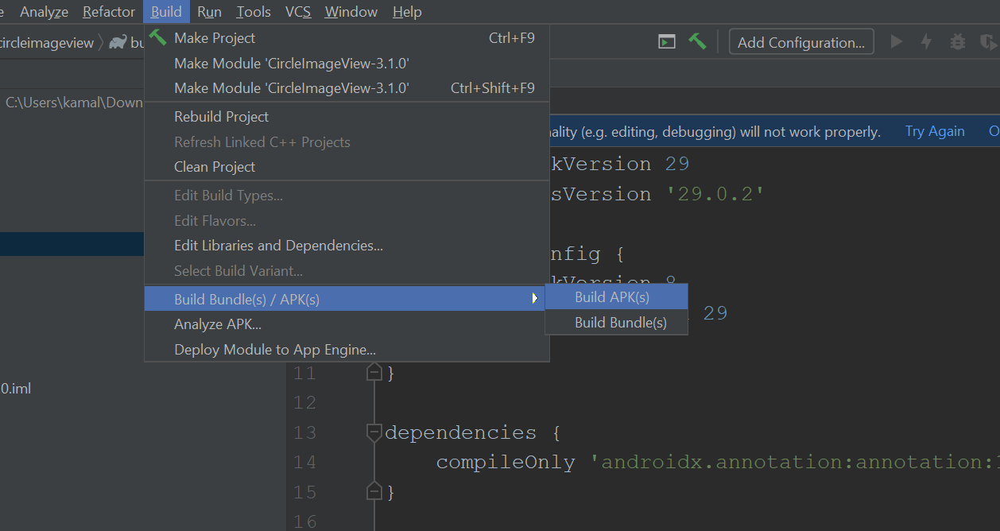
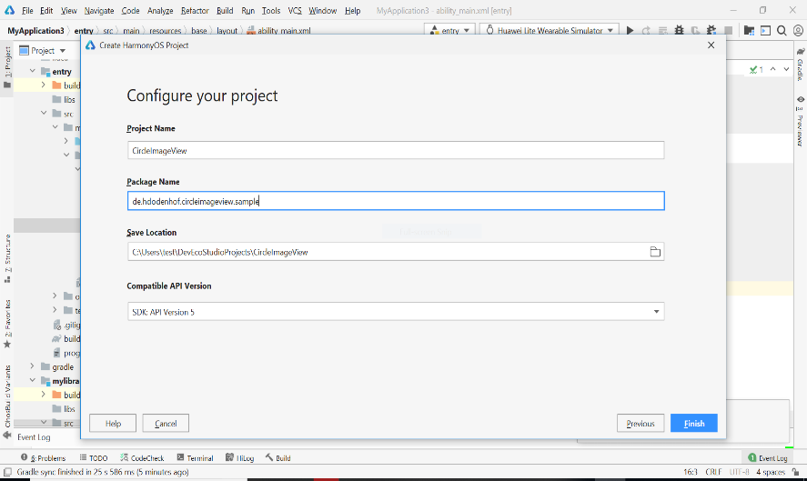
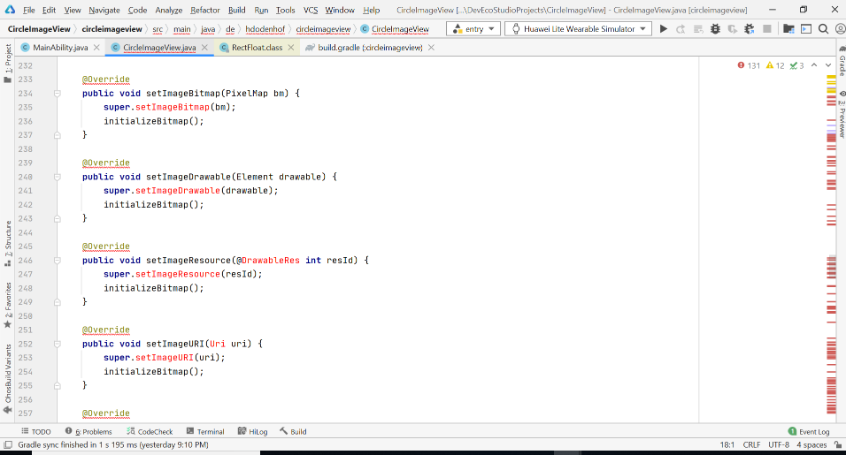
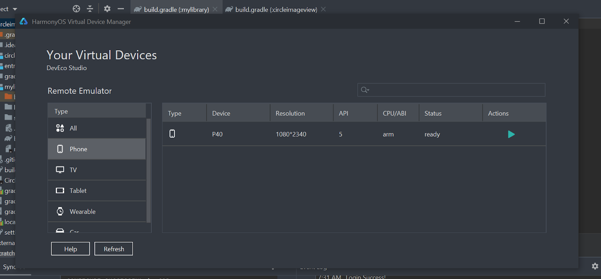

Last Updated: 2021-05-17
This document will provide a step-by-step guide to develop libraries for Harmony OS, in order to develop the libraries, it is good to have a fair understanding of Android, HarmonyOS or iOS Architecture.
Initial this document gives us a brief introduction about Android and Harmony Architecture and some deep understanding of the related API. Also, it is good to understand the key difference and information which is needed for developing libraries for HarmonyOS.
When choosing a library from Android to build a similar kind of library in HarmonyOS then, you may need to have a good knowledge in Android Application Development. Your Android knowledge will make the development process easier when developing libraries for HarmonyOS. The reason is you would be working on numerous capabilities and configurations.
If you're an expert with Android, you don't have to relearn everything for the Porting of the library and directly start learning HarmonyOS here.
If you are new to Android Development, it's highly recommended that you work through listed resources here
- Once you have spent a decent amount of time exploring Android and building applications, now you need to have a basic understanding of Android libraries.
Here you will understand how to create, publish, and use Android Libraries and the best practices around building the Android Libraries.
Details about Android Libraries can be found here.
- Finally, the basics of HarmonyOS concepts is mandatory, understanding from the architectural point of view, uniqueness of this OS and its distributed capabilities and more details.
About HarmonyOS - https://developer.harmonyos.com/en/home/
We have seen the in-detail architecture of various platforms and now let's know how HarmonyOS architecture is different when compared to the architecture and what are its unique features that makes it stand out from the rest of the platforms.
- Compared to Android or iOS or any specific OS, where different operating systems are released with each new type of device, the HarmonyOS can work on any device, irrespective of any use. Be it a television or wearable or tablet or smartphone, the apps and services can work on all these Harmony OS powered devices seamlessly without any further assistance.
- HarmonyOS focuses on their one single individual service logic, and it will allow its service to work on all sorts of devices available within the same operating system. The single code will run on different devices, delivering the same collaborative experience seamlessly without separate specific coding.
- HarmonyOS features have been enhanced to the best level possible to offer high-end security and low latency.
Until now we have learnt the basics of various platforms, the importance of libraries and how to create one. We have also seen the deep dive feature of HarmonyOS ranging from Architecture and the unique features of it.
Later we have also seen how HarmonyOS architecture is unique when compared to the rest, I think it's time to start porting libraries to HarmonyOS and the next section will help you to guide step by step to achieve this.
Note: We have set of selected libraries for you to start porting and here is the link
Now you must have chosen a library from the above list and just before you start the library porting, we need a certain checklist to be met and below are the listed ones.
- The library should be purely written in Java and you can find how to look for one as shown in the below screenshot (Image 1).
- Before porting - https://github.com/hdodenhof/CircleImageView
- After porting - https://gitee.com/openharmony-tpc/CircleImageView
- Image 1
- Make sure the package commits are recent, ensure it is maintained and not deprecated. (Note: you can find these details in the README.md section of the Package). This helps us to understand whether you should port it completely or what is the process that needs to be followed.
Below are some examples of a deprecated library -
- https://github.com/evernote/android-state
- https://github.com/soarcn/UndoBar
- https://github.com/nhsuk/frontend-library
- Next, we need to look for the licensing details of the package, ensure it is not private, and it is open sourced and free to use. Also, we make sure the library doesn't use licenses which restricts us from using this, modifying or publishing.
Most of the packages will have a license.txt file which will give complete details about the permissions or liabilities that need to be checked.
More details about licensing can be found here https://opensource.org/licenses
- Look for the dependencies in the build.gradle as shown below (Image 2). We have 2 build.gradle for every application , one is "Module" level, okand one is "Project" level. Here we need to look for "Module" level and the path is <PROJECT_ROOT>\app\build.gradle
- Image 2
- If it contains dependency libraries or external packages that are not ported, we should port that as well, make sure these checks are performed before porting one.
In this document for demonstration purposes, I will be using the Android library "CircleImageView" and show you how to port to HarmonyOS and build applications successfully.
More details about the library can be found here. https://github.com/hdodenhof/CircleImageView
Below is the list of actions to be performed while porting a library and as mentioned earlier I'm using "CircleImageView" for demonstration purposes.
- We will first get the local copy of the "CircleImageView" package. You can find the latest version here.
- Click on the latest version and download the "Source Code (Zip)" file as shown below. (Please Note: Incase if the selected package is migrated to Kotlin version then select the version prior to it for the porting).
- Run a sample app to see if the library is running fine on Android Device with Android Studio.
- Then will start with the porting process to HarmonyOS using DevEco Studio.
- Build, Test the ported library by creating a sample application in DevEco Studio
- Browse the Url - https://github.com/hdodenhof/CircleImageView
- Next click on "Tags" as shown in the below screenshot (Image 3) to retrieve the latest version of the package.
- Image 3
Below is the link to the latest version of the "CircleImageView" library.
https://github.com/hdodenhof/CircleImageView/releases/tag/v3.1.0
- Once the download is complete, extract the files locally.
- Next start your Android Studio or any IDE of your choice and open the downloaded project in the Android studio. In this case it would be the "CircleimageView" Project.
- Image 4
Once the project is connected in android and synced successfully then we will try to build the package with a simple application just to ensure the package is all good to start for porting.
- First let's "build" the package by selecting "Build" from the Menu option and then select "Build Bundles/APK" and "Build APK" as shown in the below screenshot (Image 5).
- Image 5

Sometimes the build Bundles/APK option would be disabled, in those scenarios you can perform it manually from the terminal using "gradlew clean build" as shown below (Image 6).
- Image 6
- After it is built successfully, you will find the latest "Sample.debug.apk" file available in the "Sample-> build-> outputs->apk-> debug" folder.
- You can use this APK and run on any of the emulators to view the sample application of the library usage.
- Once the APK file is up running on the emulator you should be able to view the library behavior as shown below (Image 7).
- Image 7
Until now we have selected a library, imported to Android studio, synced up and successfully run the sample Application using the APK file on the Emulator.
- For the Library porting process from Android to HarmonyOS, we need to install the latest DevEco Studio IDE, the latest version of the DevEco Studio can be found here and the Setup process.
- Create a new HarmonyOS project in DevEco Studio as shown below (Image 8).
- Image 8
- Next you will be displayed with a list of available templates, choose "Phone" and in the Template section choose "Empty Feature Ability (Java)" as shown below (Image 9).
- Image 9
- Next you need to configure the Project and make sure you follow the same library name and the package details. In this case we have used "CircleimageView" for demonstration and it would be "de.hdodenhof.circleimageview".
Project name - name of the project - maintained same as android.
Package name - package name - maintained same as android.
Compatible API Version - Select latest SDK.
Click Finish
- Image 10

- Currently we have just created an "Entry" in the DevEco Studio to run the application, but our intention is to create the library so that we can port the android library core functionality here.
- Image 11
- we need to create a library module. Right Click on "Entry" -> New -> Module -> In the pop screen select Device as "Phone" and Template as " HarmonyOS library" as shown below (Image 12).
- Image 12
- Once created with configuration details it looks like the below screenshot (Image 13).
- Image 13
- A library module is created with module level build.gradle. Any external dependencies of this module can be added in this module build.gradle.
- Next, we need to drag drop or add files from original package from Android studio to HarmonyOS as shown below and the file name would be "CircleImageView.java"
- Image 14
- The import statements in original android lib will be showing as error, now replace each of these imports into corresponding hmos imports.
For example :
android.content.Context is mapped to ohos.app.Context
android.graphics.bitmap --> ohos.media.image.PixelMap
android.graphics.Matrix --> ohos.agp.utils.Matrix
- Image 14.1
Further details about each of these classes can be referred from the API docs which has more detailed explanation about the methods available in each of them.
Tools->SDK Manager-> Go to HarmonyOS SDK Location path/java/"version"/docs/default/index.html
- Image 15
- Even after imports are added, there could still be compilation errors as shown below, because we don't have methods like setImageDrawable, setImageBitmap, setImageResource etc. in the Harmony Image class.
- Image 16

- In these cases, we need to find the corresponding mapping method for these functions in Harmony.
setImageBitmap --> setPixelMap
setImageDrawable --> There is no mapping method in Image class, so we can remove the @Override to avoid compilation errors and create custom logic to implement this feature.
We can create custom logic to get pixelmap object from the element object passed in setImageDrawable and call the setPixelmap passing this created pixelMap as argument.
There is no setImageResource(int resId) in harmony, instead we have setPixelmap(int resId) which achieves the same functionality. This can be used instead.
- Image 17
You can find the updated open sourced code here
- You might still find missing methods like "RectF" and RectF '' are not present in harmony. So, in such cases we can create a custom class and extend the Harmony RectF class as shown below (Image 18).
- Image 18
- Image 19
- Image 20

- Some of the classes will be absent in the current version of SDK, in such cases we check if those classes are necessary for the core functionality of the library, if yes, we must check the feasibility of creating a custom class, else we can enhance this in the upcoming sdk versions.
Example: Outline, ViewOutlineProvider
- In Android, for custom Imageviews
onDraw()is called from the framework side whenever view is drawn orinvalidate()is called. For harmony, to get this callback from f/w we need to implement Component.DrawTask and useaddDrawtask(Component.DrawTask task). This will call onDraw(Component component, Canvas canvas) whenever a component is updated through a draw task.
- Image 21
- Instead of typing Array in android, we use AttrSet in harmony to access the custom attributes that we set in xml file.
- Image 22
- In android, bitmap is created using
Bitmap.createBimappassing in the drawable height , width, and Bitmap Config as arguments. In Harmony, we havePixelMap.InitializationOptions, into which we fill in the size of the element and pixel format and then create pixelMap usingPixelMap.createpassing the initializationOptions as argument.
- Image 23
- Now you should find all the errors disappeared and no more squiggly red lines in the code.
- Once this is completed, we need to "build", you can build this using the "Build" option from the Menu option and "Build HAP".
- Check if the build is successful and this progress would be displayed in the "Terminal" window of your IDE.
There are 2 types of testing one and you can try any of the below suitable types.
- Junit
- Sample Application
Junit
- Junit test cases can be written inside entry->src->ohosTest as shown below (Image24)
- Image 24
- I have attached a doc (ExampleOhosTest.java) here which contains the list of sample test cases performed on the CircleImageView library.
- Make sure that Junit is added in dependencies inside entry->build.gradle and it also has decc{supportType=['html','xml']} as shown in the screenshot below (Image 25).
Please Note: Device should be connected(Emulator running) (Image 26)
- Image 25

- Image 26
- Next, we need to Click on Gradle->other->executeOhosTest. Just click and this will start to execute the Junit cases.
- Image 27
- After successful execution the result will be generated inside entry->build->outputs->ohosDeccTest->result->decctest.xml as shown below (Image 28)
- Image 28
This xml file gives you the details about the test result if it was successful or failed.
Sample Application
- After the library is completely ported, we can test it by writing a functionality in the MainAbilitySlice.java of the entry folder. Make sure to add the library in the entry build.gradle also as shown below (Image 29).
- Image 29
- Image 30
Note: if you have any third-party libraries referenced then please mention in the build.gradle file.
- Once this is completed, we need to "build", you can build this using the "Build" option from the Menu option and "Build HAP".
- Once built you can run the sample application on the Emulator. To start the emulator, follow the below procedure.
- Click on Tools -> HVD Manager.
- Next it will prompt you to login and once login successfully you will be displayed with the list of emulators as shown below (Image 31).
- Image 31

- Choose "Phone" and click on the Play button and this will kick start your emulator.
- Once the emulator is up, select the module, and the Emulator would be selected and click on "Run" icon as shown below(Image 32).
Image 32
If the porting was successful and the build you should be able to view the Circle Image in Emulator as shown below( Image 33).
Image 33
- Migration Policy and Methods
- Mapping between Android and Harmony components
- Migration Policy
- Migration Method
- External Dependency analysis
- Functional Module